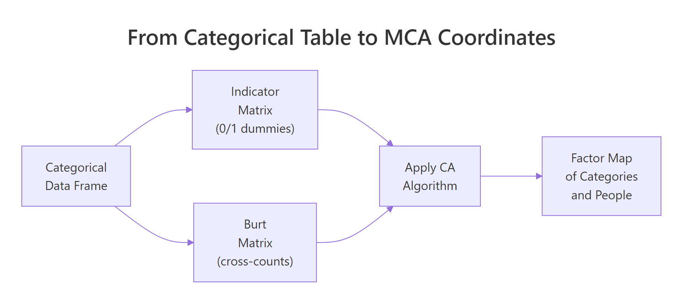
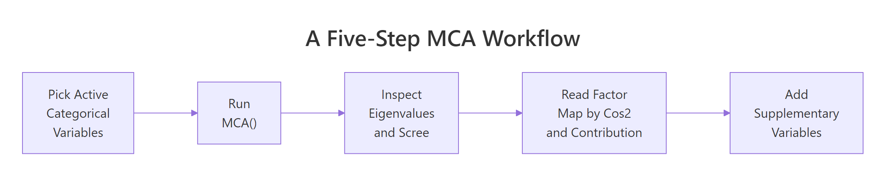

Multiple Correspondence Analysis (MCA) in R: Visualize Categorical Tables
Multiple correspondence analysis (MCA) is correspondence analysis applied to many categorical variables at once. In R, FactoMineR::MCA() plus factoextra turns a wide table of factors into a 2D factor map where categories that co-occur sit close together.
How does MCA extend correspondence analysis to many categorical variables?
Correspondence analysis maps two categorical variables. Real survey data has dozens. The fix is to recode every variable into 0/1 dummies, stack them into one big indicator matrix, and run CA on that. The result is a single factor map that places every individual and every category of every variable on the same coordinate system. We'll fit it on the tea survey from FactoMineR, then peek at the theory.
Before any math, let's see the payoff. The block below loads FactoMineR and factoextra, fits MCA on the first 18 columns of tea (300 respondents, 18 questions about how they drink tea), and draws the variable-category biplot.
The plot puts each category of each variable on the map. Convenient categories like tea bag, lunch, and alone cluster on one side of Dim 1. Slow-ritual categories like unpackaged, evening, and friends cluster on the other. MCA recovered a "fast vs ceremonial tea drinker" axis from 18 unrelated questions without you writing a single comparison.

Figure 1: MCA recodes a categorical table into either an indicator matrix or a Burt matrix, then runs CA on it.
Try it: Refit MCA on a 3-variable subset (Tea, How, how) and check that the biplot now shows fewer category points. Use label = "var" to print just the categories.
Click to reveal solution
Explanation: MCA() accepts any data frame of factors. With three variables you get one point per level of each, so the map looks sparser but the geometry of the categories is preserved.
How does MCA encode categorical variables into a coordinate space?
Here's what MCA() actually does internally. Step one: build an indicator matrix. That's a wide table where every category becomes its own 0/1 dummy column. Step two: run the same chi-square-distance machinery as plain correspondence analysis on that wide table. The factor map you saw above is just CA applied to this expanded representation.
The block below pulls out the indicator matrix for the first three variables of tea_active so you can see the dummy encoding directly. tab.disjonctif() is FactoMineR's helper for this.
Each row is a respondent. Each column is one category, holding 1 if the respondent picked it and 0 otherwise. Row 1 didn't drink tea at breakfast, tea time, evening, or lunch. Every dummy is 0 for the chosen category and 1 for the "Not" complement. This 0/1 expansion is what MCA feeds into the CA engine.
Z and compute t(Z) %*% Z. You get a symmetric category-by-category matrix of joint counts. That's the Burt matrix. MCA on the Burt matrix yields the same factor map directions as MCA on the indicator matrix, just with eigenvalues that are squared. FactoMineR::MCA() uses the indicator route by default.Try it: Confirm that for any single respondent, the dummies for one variable sum to exactly 1. Pick row 5 of ind_mat and add up its first two columns (the two breakfast levels).
Click to reveal solution
Explanation: Every respondent picks exactly one level per categorical variable, so the corresponding dummies sum to 1. This is why MCA's row mass is constant across individuals.
How do you read the MCA factor map?
The MCA biplot crams a lot onto one canvas. To read it cleanly, plot categories and individuals on separate maps first. The categories map answers "which response patterns hang together?". The individuals map answers "which respondents look alike?".
The block below draws the categories-only map. Each point is a category, positioned by how its respondents differ from the average tea drinker.
Categories close together get picked by similar respondents. unpackaged, tearoom, and friends cluster on the right, the slow-ritual end. tea bag, chain store, and lunch cluster on the left, the convenience end. The opposition along Dim 1 is the dominant signal in the survey.
Now switch to the individuals map and color by the Tea variable (black, green, or Earl Grey).
The three ellipses overlap heavily, which means tea type alone doesn't define a respondent. But the centroids do drift: Earl Grey drinkers lean left (convenience side), green tea drinkers lean up (Dim 2 difference). MCA gives you a single coordinate system to make these soft pattern statements.
dimdesc() instead, see Section 6). Within-group distances (individual-to-individual, category-to-category) are fine to read directly.Try it: Color the individuals plot by how (tea bag, unpackaged, or both) instead of by Tea. Use the same options.
Click to reveal solution
Explanation: habillage accepts any factor in the active data. The how variable splits respondents along Dim 1 cleanly because Dim 1 is essentially the convenience-vs-ritual axis.
How do you decide how many dimensions matter (eigenvalues + Benzécri correction)?
MCA gives you up to (number of categories − number of variables) dimensions. You don't want all of them. The eigenvalue table tells you how much variance each dimension captures, but raw MCA eigenvalues are pessimistic, every additional dummy column adds a small amount of trivial noise. Benzécri's correction removes that noise.
Start by inspecting the raw eigenvalues and the scree plot.
The raw scree shows Dim 1 keeps 12.6% and Dim 2 keeps 7.4%. That looks low. It is low because the indicator matrix inflates the total inertia with structurally meaningless variation. Benzécri's correction adjusts every eigenvalue above the threshold $1/Q$ (where $Q$ is the number of active variables) and discards the rest.
The corrected formula is:
$$\lambda_s^{*} = \left(\frac{Q}{Q - 1}\right)^2 \left(\lambda_s - \frac{1}{Q}\right)^2 \quad \text{for } \lambda_s > \frac{1}{Q}$$
Where:
- $\lambda_s^{*}$ = corrected eigenvalue for dimension $s$
- $\lambda_s$ = raw MCA eigenvalue for dimension $s$
- $Q$ = number of active categorical variables
Now compute the corrected eigenvalues for the dimensions that pass the threshold.
After correction, Dim 1 alone captures roughly 47% of the meaningful variance, not 12.6%. Dim 2 drops to about 10%. The first two dimensions together explain ~57% of the structure, a much fairer summary of how much MCA actually compressed the survey.
FactoMineR book (reference 3 below) prints both side-by-side for this reason.Try it: Compute the cumulative corrected variance for the first 3 dimensions of lambda_corr. The number tells you how much total information lives in a 3D summary.
Click to reveal solution
Explanation: The first three Benzécri-corrected dimensions explain about 62% of the meaningful variance in the tea survey. A 3D summary captures most of the signal; dimensions beyond that are mostly residual.
Which categories drive the dimensions (contribution and cos2)?
Eigenvalues tell you how big each dimension is. Contribution and cos2 tell you which categories build it. Contribution is the share of a dimension's variance that a category accounts for, top contributors are the categories you cite when you name the axis. Cos2 is the share of a category's own variance that the dimension explains, high cos2 means the category sits cleanly on that axis.
The block below ranks the top 15 contributors to Dim 1 and recolors the categories map by cos2 on the first two dimensions.
The contribution plot pins Dim 1 down: it's mostly built by where you buy your tea (tearoom, unpackaged, chain store) and how it's packaged (tea bag). Categories above the dashed reference line contribute more than uniform expectation. The cos2 map then tells you which categories the first two dimensions actually represent, unpackaged is both a top contributor and well-represented (red), so it's a safe label for Dim 1.
Try it: Look at the top 15 contributors to Dim 2 instead of Dim 1. Which categories build the second axis?
Click to reveal solution
Explanation: Dim 2 is dominated by when tea is consumed (work, lunch) and which tea (green vs Earl Grey vs black), separating a workday-tea pattern from a leisure-tea pattern.
How do supplementary variables sharpen interpretation?
Supplementary variables don't influence the geometry. They get projected onto the factor map after the fit, so you can ask "does this variable line up with my axes?" without contaminating the active fit. MCA() accepts categorical supplementary variables via quali.sup and quantitative ones via quanti.sup.
The block below refits MCA on tea with Tea, price, and where as supplementary categorical variables (columns 19, 20, 21 in the original tea table) and uses dimdesc() to list which categories associate strongest with Dim 1.
dimdesc() runs an ANOVA between each supplementary variable and the dimension. where (where you buy tea) has the largest $R^2$ on Dim 1, confirming the convenience-vs-ritual reading. The category-level table picks out specific labels: chain store+tea shop and tearoom sit on opposite ends, and unpackaged swings the dimension hardest in the negative direction.
Try it: Move Tea (the variable, column 19) from the supplementary list and add friends (column 12) as supplementary instead. Then run dimdesc() again on Dim 1.
Click to reveal solution
Explanation: friends shows weak association with Dim 1, drinking tea with friends doesn't separate convenience drinkers from ritual drinkers as sharply as where does. dimdesc() gives you a quick statistical test for any candidate variable.
Practice Exercises
Exercise 1: MCA on the food-poisoning survey
The poison dataset (also in FactoMineR) records 55 children, the food they ate at a school dinner, and the symptoms they reported. Fit MCA on columns 5-15 of poison (the food/symptom dummies, all factors), and identify the top contributor to Dim 1. Save it to my_top_contrib.
Click to reveal solution
Explanation: Vomit_y (vomiting yes) contributes most to Dim 1, Dim 1 is essentially the "got sick" axis. Raw Dim 1 + Dim 2 explain about 25%; after Benzécri correction the meaningful share is much higher.
Exercise 2: Compare raw vs Benzécri-corrected variance on tea
For res.mca (the tea MCA fit from Section 1), compute the corrected percentage of variance for Dim 1 using the Benzécri formula, and confirm it is larger than the raw eig[1, "percentage of variance"]. Save the corrected percentage to my_corr_pct.
Click to reveal solution
Explanation: Corrected Dim 1 explains 47%, raw Dim 1 explains only 12.6%. The corrected number is the one to report, because the raw percentage is depressed by structural noise from the indicator encoding.
Complete Example
Here's a self-contained MCA on the poison dataset from start to interpretation. The pattern is the same for any survey: pick active variables, fit, check eigenvalues, plot, and add supplementary variables for confirmation.
Dim 1 separates sick from healthy children (Sick has the highest supplementary $R^2$). The top contributors are vomiting, abdominal pain, and the foods most associated with the outbreak. With ~25% raw variance on Dim 1 + Dim 2, this two-dimensional summary already pins down the food–symptom pattern.
Summary
The full MCA workflow boils down to five steps. The diagram below shows how they connect, and the table beneath maps each step to its R function.

Figure 2: Five-step MCA workflow from data to interpretation.
| Step | What you do | R function |
|---|---|---|
| 1 | Pick active categorical variables (drop ID columns, supplementary candidates) | column subset |
| 2 | Fit MCA | FactoMineR::MCA() |
| 3 | Inspect eigenvalues, apply Benzécri correction | res$eig, manual formula |
| 4 | Read factor map by contribution and cos2 | fviz_contrib(), fviz_mca_var(col.var = "cos2") |
| 5 | Project supplementary variables, run dimdesc() |
quali.sup =, dimdesc() |
Three things to remember: every category is a point (not every variable); raw eigenvalues underreport the structure (use Benzécri); contribution and cos2 must be read together to name an axis.
References
- Husson, F., Lê, S., and Pagès, J. Exploratory Multivariate Analysis by Example Using R, 2nd Edition. CRC Press (2017). Chapter 4: Multiple Correspondence Analysis.
- FactoMineR.
MCA()function reference. Link - factoextra.
fviz_mcadocumentation. Link - Kassambara, A. STHDA: MCA - Multiple Correspondence Analysis in R: Essentials. Link
- Benzécri, J.-P. (1979). Sur le calcul des taux d'inertie dans l'analyse d'un questionnaire. Cahiers de l'Analyse des Données, 4(3), 377-378.
- Greenacre, M. (2017). Correspondence Analysis in Practice, 3rd Edition. CRC Press. Chapter 19: Multiple Correspondence Analysis.
Continue Learning
- Correspondence Analysis in R. The two-variable parent of MCA; read this first if biplots are new.
- PCA in R. The numeric-data counterpart of MCA; same factor-map idea, different distance metric.
- Cluster Analysis in R. Pair MCA coordinates with k-means or HCPC to label respondent groups.